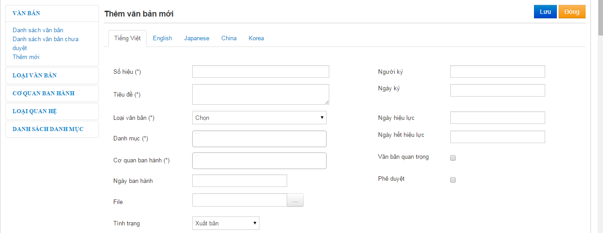
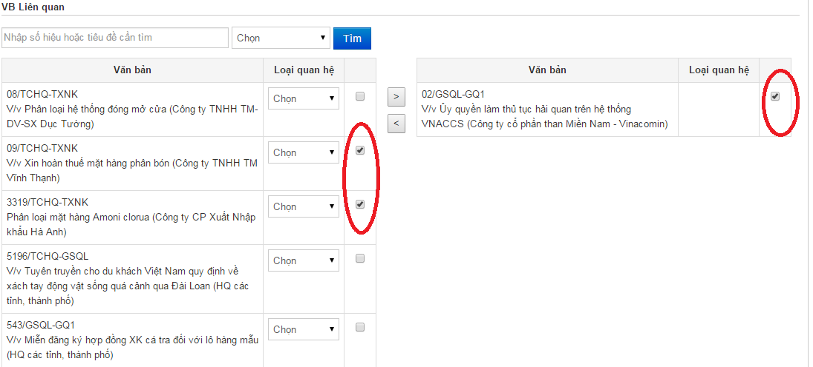
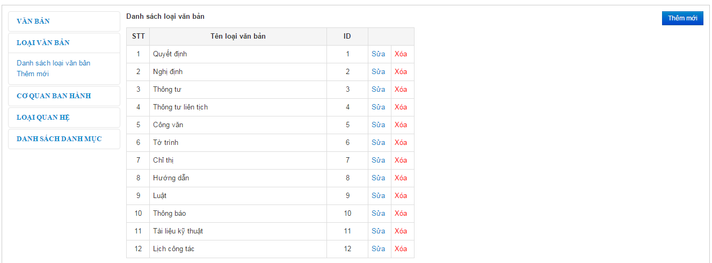
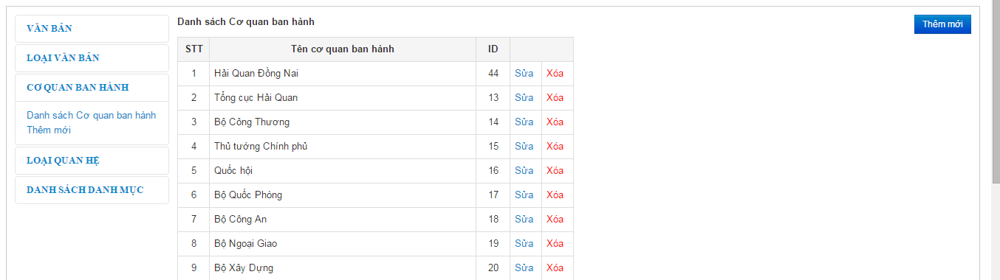
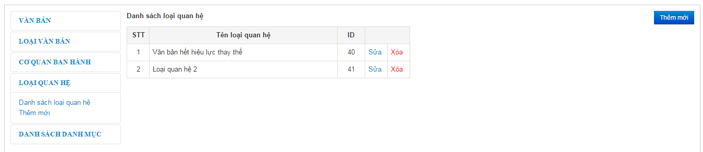
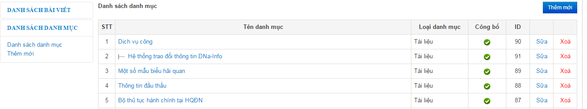

- Thêm mới Văn bản
o Vào D.Nội dung -> 3. Quản lý văn bản
o Nhấn nút thêm mới để vào giao diện thêm mới văn bản
o Nhập thông tin vào các trường cơ bản như Số hiệu, tiêu đề văn bản, Loại văn bản, Danh mục văn bản… (Các trường có dấu sao là bắt buộc).

o Thêm văn bản liên quan cho văn bản Check vào văn bản cần thêm -> Nhấn nút để thêm văn bản
o Xóa văn bản liên quan: Check vào checkbox chọn văn bản cần xóa -> Nhấn nút để xóa văn bản liên quan

- Sửa thay đổi nội dung văn bản
o Vào D.Nội dung -> 3.Quản lý văn bản
o Chọn văn bản cần sửa -> Nhấn nút sửa để vào giao diện sửa văn bản
o Thay đổi nội dung , cập nhật văn bản liên quan giống như phần thêm mới văn bản
- Xóa văn bản
o Vào D.Nội dung -> 3.Quản lý văn bản
o Chọn văn bản cần xóa -> Nhấn nút xóa
- Vào D.Nội dung -> 3.Quản lý văn bản
- Ở menu bên trái chọn loại văn bản -> Danh sách loại văn bản
- Nhấn nút thêm mới để thêm mới một loại văn bản -> Nhập tên -> Nhấn nút lưu để hoàn tất
- Chọn loại văn bản cần sửa -> Nhấn nút sửa để sửa -> Thay đổi tên cần sửa -> Nhấn nút lưu để hoàn tất
- Chọn văn bản cần xóa -> Nhấn nút xóa để xóa văn bản.

- Vào D.Nội dung -> 3.Quản lý văn bản
- Ở menu bên trái chọn Cơ quan ban hành -> Danh sách cơ quan ban hành
- Nhấn nút thêm mới để thêm mới cơ quan ban hành -> Nhập tên -> Nhấn nút Lưu để hoàn tất
- Chọn Cơ quan ban hành cần sửa -> Thay đổi tên -> Nhấn nút lưu lại để hoàn tất
- Chọn Cơ quan ban hành cần xóa -> Nhấn nút xóa để xóa Cơ quan ban hành

- Vào D.Nội dung -> 3.Quản lý văn bản
- Ở menu bên trái chọn loại quan hệ -> Danh sách loại quan hệ
- Nhấn nút thêm mới để thêm mới Loại quan hệ -> Nhập tên -> Nhấn nút Lưu để hoàn tất
- Chọn loại quan hệ cần sửa -> Thay đổi tên -> Nhấn nút lưu để hoàn tất
- Chọn loại quan hệ cần xóa -> Nhấn nút xóa để xóa loại quan hệ

- Vào D.Nội dung -> 3.Quản lý văn bản
- Ở menu bên trái chọn Danh sách danh mục -> Danh sách danh mục
- Xem phần Quản lý danh mục (Lưu ý nhập loại doanh mục là Tài liệu)
